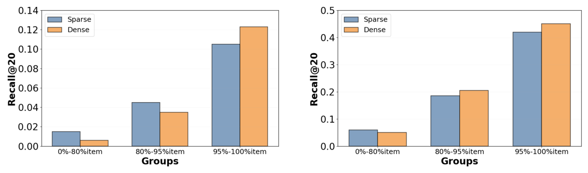

title: "[Paper Note] Why not Collaborative Filtering in Dual View? Bridging Sparse and Dense Models" description: "[TOIS 2026][协同过滤与双塔召回] 提出稀疏-稠密双视图框架 SaD：用 slim 的结构信号与 MF 语义嵌入互造伪标签对齐，理论上突破冷门物品的 \(\sqrt{N_i}\) SNR 上限。" tags: - TOIS - 协同过滤与双塔召回 - 召回 - 双视图对齐 - 稀疏-稠密融合 - 信噪比分析 - 长尾物品 date: 2026-11-21 venue: TOIS year: 2026 paper_url: "https://arxiv.org/abs/2601.09286" code_url: "https://github.com/harris26-G/SaD" categories: - collaborative_filtering - cold_start_rec
Why not Collaborative Filtering in Dual View? Bridging Sparse and Dense Models (为什么不做双视图协同过滤？桥接稀疏与稠密模型)
- 会议/期刊: ACM Transactions on Information Systems (TOIS)
- 作者与机构: Hanze Guo（人大高瓴人工智能学院）、Jianxun Lian（微软亚研院）、Xiao Zhou（人大高瓴 / 通讯）
- 推荐链路定位: 召回（ID-only 隐式反馈 Top-K 排序）
- 研究方向: 协同过滤与双塔召回 / 冷启动与长尾推荐
- 论文原文: arXiv:2601.09286
- 开源代码: harris26-G/SaD
TL;DR (1分钟核心速览)
本文指出参数化稠密嵌入（MF/LightGCN）在冷门物品上存在信噪比天花板 \(\mathrm{SNR}\lesssim\sqrt{N_i}\)，而 degree normalization 无法突破该瓶颈；据此提出 SaD——把 slim 式稀疏视图（item-item 显式结构）与稠密嵌入视图做双向伪标签对齐：稀疏→稠密用 Top-K 邻居生成伪正例扩充样本，稠密→稀疏用嵌入打分为物品图补边。在 4 个基准、Full-Ranking 协议下，仅用 MF 作稠密骨干即全面 SOTA，Recall@20 相对提升 1.0%–5.4%（\(p<10^{-2}\)），并在 BARS 榜单排名第一。
Background & Motivation (背景与核心矛盾)
- 主流范式: 稠密嵌入 + 图卷积（LightGCN/SGL/SimGCL）已成为 CF 事实标准，近年来的改进主要靠自监督对比学习在同一潜在空间内做数据增广。
- 前人局限: ①稠密模型在长尾/冷门物品上性能崩塌，参数估计噪声随交互数 \(N_i\) 下降缓慢；②已有"混合"尝试（UltraGCN、GF-CF、PGSP）把稀疏结构当架构内模块使用，属于 model-specific 设计，且缺乏"融合为何有效"的理论刻画。
- 核心洞察 (Key Insight): 稠密模型擅长语义泛化但在长尾上方差爆炸，稀疏模型（ItemCF/slim）依靠局部邻域平均，方差 \(\propto 1/K_i\)，即使\(N_i\) 很小也能保持高局部 SNR——两者误差弱相关，构成理想融合对；图 1 中 slim 在冷门物品组反超 MF 正是这一现象的直接证据。
- 本文切入点: 不做架构级耦合，而是用"互相造伪标签样本"这一数据层对齐方式，把两个范式拼接成一个可插拔框架。

Method (核心方法设计)
1. 整体框架 (Overall Architecture)
SaD 是"两视图串行训练 + 对齐投影"的极简闭环：先用原始交互矩阵 \(R\)训 slim 得到 item-item 相似度\(S\)，据此为用户/物品各取 Top-K 邻居生成伪正例，得到增广矩阵\(\hat{R}=R+\lambda R^*\)并重训稠密 MF（得到语义嵌入\(E_U,E_I\)）；再反过来用稠密打分矩阵\(Y^D\)的 Top-K 生成伪交互\(Q\)，与原矩阵做逻辑或\(R'=R\vee Q\) 补全稀疏视图并重训 slim；最终由线性投影器把两路打分加权融合输出。整个流程不改动任何骨干网络内部结构，MF、LightGCN、SGL、SimGCL 均可直接充当稠密视图。
flowchart TD
A["交互矩阵 R (ID-only 隐式反馈)"] --> B["稀疏视图: slim 学 item-item 相似度 S"]
A --> C["稠密视图: 度数归一化 MF 嵌入"]
B -->|"Top-K 邻居 → 伪正例 R*"| D["增广矩阵 R̂ = R + λR*"]
D --> C2["重训稠密视图 → yD"]
C -->|"打分 Top-K → 语义补边 Q"| E["语义补图 R' = R ∨ Q"]
E --> B2["重训稀疏视图 → yS"]
C2 --> F["投影器 ỹ = yD + β·yS"]
B2 --> F2. 关键设计拆解 (Key Designs)
- SNR 天花板定理与融合判据（理论增量）：以正负对 margin \(\Delta\)定义\(\mathrm{SNR}=\mathbb{E}[\Delta]/\sqrt{\mathrm{Var}(\Delta)}\)，在噪声协方差\(\mathrm{Cov}(\varepsilon_i)\succeq \frac{c}{N_i}\mathbf{I}_d\) 下证得
\(\mathrm{SNR}_{\mathrm{MF}}(u,i,j)\le \dfrac{\lVert e_i^*-e_j^*\rVert}{\sqrt{c}\sqrt{N_i}},\)且归一化打分\(\hat{z}_{ui}=e_u^{\top}e_i/\sqrt{d_ud_i}\)只改变常数因子，瓶颈仍为\(\sqrt{N_i}\)（定理 2）。而凸融合\(s=\alpha s_1+(1-\alpha)s_2\)的 SNR 满足\(\mathrm{SNR}(\alpha,\rho)\ge\min\{r_1,r_2\}\)，且当\(\rho\le r_{\min}/r_{\max}\) 时可超越更强单视图——这就是"选弱相关视图 + 各自提纯"的设计依据。
-
Sparse→Dense：伪正例标签增广：冷门物品缺样本的本质是 \(N_i\)太小。稀疏视图按其相似度给出高置信邻居，取双向 Top-K 并做 OR 得\(r^*_{ui}=\mathbb{I}[u\in\text{Index}_i\vee i\in\text{Index}_u]\)，把稠密视图的有效样本量抬到\(N_i+\eta_i\)，理论上\(\sigma'_D\approx\sigma_D\sqrt{N_i/(N_i+\eta_i)}\)、\(r'_D\gtrsim(1-2\varepsilon)r_D\sqrt{1+\eta_i/N_i}\)——即使伪标签含噪（噪声率\(\varepsilon<1/2\)），只要增益足够仍净赚 SNR。
-
Dense→Sparse：语义补边与融合训练：稀疏视图只保留 top-K 共现，信息覆盖不足；用稠密嵌入 Top-K 打分构成 \(Q\)并与\(R\)逻辑或，扩充每个物品的邻域数\(K_i\to K_i+\kappa_i\)，从而\(\sigma'_S\approx\sigma_S\sqrt{K_i/(K_i+\kappa_i)}\)，以几乎无偏的方式降低邻域聚合方差。稠密侧训练目标为度数归一化 BCE：
\(\mathcal{L}_O=-\!\!\sum_{(u,i)\in\mathcal{N}^+}\!\! d_{ui}\log\sigma(e_u^{\top}e_i)-\!\!\sum_{(u,i)\in\mathcal{N}^-}\!\! d_{ui}\log\big(1-\sigma(e_u^{\top}e_i)\big),\quad d_{ui}=\tfrac{1}{\sqrt{D_uD_i+\alpha}}\)增广样本沿用同式得\(\mathcal{L}_I\)；负样本从增广矩阵中采样（非免负采样）。推理时\(\tilde{y}_{ui}=y^D_{ui}+\beta\, y^S_{ui}\)，\(\beta\) 控制稀疏视图权重；开销为 2 次 slim + 1 次 MF，Yelp 上总耗时 0:35，反而快于 SimGCL（0:29→同量级）与 LightGCN（11:03）。
Experimental Setup & Evaluation Protocol (实验设置与评估协议)
- 数据集与预处理: 沿用 LightGCN 的标准切分与过滤，Amazon-Book/Yelp/Gowalla 与 BARS 榜单一致。
| 数据集 | #Users | #Items | #Interactions | 稀疏度 | 说明 |
|---|---|---|---|---|---|
| Gowalla | 29,858 | 40,981 | 1,027,370 | 99.91% | LBS 签到 |
| Yelp2018 | 31,668 | 38,048 | 1,561,406 | 99.87% | 本地商户 |
| Amazon-Book | 52,643 | 91,599 | 2,984,108 | 99.94% | 电商图书 |
| Movielens | 6,022 | 3,043 | 796,244 | 95.65% | 电影评分 |
- 数据划分与防穿越:
比例划分（沿用 LightGCN 的 train/valid/test 8:1:1），非 Leave-One-Out。 - 排名评测协议: 无偏
Full-Ranking（全库未交互物品排序），指标 Recall@20 / NDCG@20。 - 对比基线与超参: 基线含通用模型（LR-GCCF、ENMF、NIA-GCN、NGCF、LightGCN、DGCF、SGL-ED、SimpleX）与隐式双视图模型（slim、GF-CF、UltraGCN、PGSP）；\(d=64\)、lr\(1\mathrm{e}{-3}\)、batch 1024、L2\(1\mathrm{e}{-4}\)；\(\beta\in\{1,3,5,10,15,20,50,100,10^3,10^4\}\)、Top-\(K\in\{0,5,\dots,50\}\)网格搜索，并报告\(p\) 值显著性。
Key Experimental Results (实验关键数据)
1. 主实验对比 (Main Results)
| 方法 | Yelp R@20 | Yelp N@20 | Gowalla R@20 | Gowalla N@20 | Amazon R@20 | Amazon N@20 | ML R@20 | ML N@20 |
|---|---|---|---|---|---|---|---|---|
| LightGCN | 0.1830 | 0.1554 | 0.0649 | 0.0530 | 0.0411 | 0.0315 | 0.2576 | 0.2427 |
| SGL-ED | 0.1769 | 0.1502 | 0.0675 | 0.0555 | 0.0478 | 0.0379 | 0.2577 | 0.2507 |
| SimpleX | 0.1872 | 0.1557 | 0.0701 | 0.0575 | 0.0583 | 0.0468 | 0.2802 | 0.2670 |
| SimGCL | 0.1830 | 0.1542 | 0.0724 | 0.0596 | 0.0480 | 0.0377 | 0.2728 | 0.2594 |
| slim (纯稀疏) | 0.1699 | 0.1382 | 0.0646 | 0.0541 | 0.0755 | 0.0602 | 0.2577 | 0.2507 |
| GF-CF | 0.1849 | 0.1518 | 0.0697 | 0.0571 | 0.0710 | 0.0584 | 0.2667 | 0.2549 |
| UltraGCN | 0.1862 | 0.1580 | 0.0683 | 0.0561 | 0.0681 | 0.0556 | 0.2787 | 0.2642 |
| PGSP | 0.1916 | 0.1605 | 0.0712 | 0.0587 | 0.0710 | 0.0583 | 0.2759 | 0.2627 |
| SaD | 0.1969 | 0.1652 | 0.0731 | 0.0602 | 0.0796 | 0.0635 | 0.2865 | 0.2743 |
| Improv.% | 2.8% | 2.9% | 1.0% | 1.0% | 5.4% | 5.5% | 2.3% | 2.7% |
| \(p\)-value | 7.3e-7 | 3.0e-7 | 5.5e-3 | 4.3e-3 | 2.4e-9 | 6.5e-9 | 1.4e-5 | 7.1e-6 |
2. 消融实验 (Ablation Study)
| 变体 | Gowalla R@20 | Yelp R@20 | Amazon R@20 | ML R@20 |
|---|---|---|---|---|
| Dense (仅 MF) | 0.0674 | 0.1852 | 0.0499 | 0.2777 |
| Sparse (仅 slim) | 0.0655 | 0.1635 | 0.0755 | 0.2577 |
| Ensemble (直接加权和) | 0.0682 | 0.1863 | 0.0521 | 0.2828 |
| SaD w/o align | 0.0715 | 0.1922 | 0.0765 | 0.2847 |
| w/o S2D（去稀疏→稠密） | 0.0723 | 0.1968 | 0.0779 | 0.2852 |
| w/o D2S（去稠密→稀疏） | 0.0719 | 0.1924 | 0.0775 | 0.2857 |
| SaD (full) | 0.0731 | 0.1969 | 0.0796 | 0.2865 |
3. 关键实验发现 (Key Findings)
- 对齐贡献是主要增益，而非单纯集成：直接 Ensemble 仅在 Gowalla 上到 0.0682，而 w/o align 已跳至 0.0715，完整 SaD 再提至 0.0731——作者称视图对齐相对无对齐带来 2%–4% 增益，说明双向伪标签是核心而非加权技巧。
- 两个方向贡献不对称：去掉 S2D 在 Yelp 几乎无损（0.1968 vs 0.1969），但在 Amazon 掉 0.0017、Gowalla 掉 0.0008；去掉 D2S 在 Yelp 掉 0.0045、Gowalla 掉 0.0012。即"稠密语义补边"对稠密共现丰富的数据更关键，"稀疏伪正例增广"则在极度稀疏的 Amazon 上更有价值。
- 长尾改善与 SNR 实证对齐：Movielens 最冷门 80% 物品子群上 SaD 相对 MF 提升约 25%，Yelp 冷门组性能约为 MF 的 2.5 倍；MovieLens-1M 上长尾 SNR 由稠密 1.79 提升至 2.05、整体 SNR 1.684→1.914、Recall@20 0.2777→0.2865，即便跨视图相关 \(\rho\) 由 0.24 升至 0.26（定理 3 允许的权衡区）。此外 LightGCN+SaD 在 Yelp/Amazon 分别 +17.0%/+94.8%，SimGCL+SaD 仍再涨 ~4.4%。
Highlights & Limitations (亮点、对比与审稿批判)
- 与代表作对比 (vs. Prior Work): 与 UltraGCN（用 item-item 图约束嵌入，属损失级耦合）、GF-CF/PGSP（图信号滤波把稀疏结构写进算子）不同，SaD 把稀疏视图当作独立可替换的伪标签生成器，对稠密骨干零侵入；对比 SGL/SimGCL 的单视图对比增广，SaD 是跨视图样本扩充，二者正交（实验表 6 已验证可叠加）。
- 可迁移亮点: ①"弱相关弱模型 + 伪标签互相增广"这一数据层对齐范式，可搬到多模态/跨域召回而无需重训骨干；②用 SNR 分桶诊断（按物品流行度计算 margin 的均值/方差）作为长尾归因的量化工具，比单纯报 Recall 更有解释力。
- 审稿级局限批判: ①Amazon-Book 上 +94.8% 的插拔增益中，纯 slim（0.0755）本身已超过所有稠密基线（0.0411），增益可能主要来自稀疏视图的绝对强度而非"对齐"，论文未做等参数量/等训练预算的对照；②训练流程需串行两次 slim + 一次 MF 且 \(\beta\)高度敏感（Amazon 最优 100、Yelp 最优 25，均需网格搜索），实际部署调参成本被低估；③噪声假设\(\mathrm{Cov}(\varepsilon_i)\succeq\frac{c}{N_i}\mathbf{I}_d\) 与邻域局部平滑假设较强，且全部实验限于 ID-only 隐式反馈，未验证含侧信息、序列或时序漂移场景。
Rating (四维评分)
- 方法创新性 (Novelty): ⭐⭐⭐⭐ （以 SNR 上限定理把"稀疏/稠密互补"从经验观察升格为可证命题，并给出 \(\rho\) 与单视图增益的权衡判据，理论增量扎实；算子本身较朴素。）
- 评估协议与实验扎实度 (Protocol & Experiments): ⭐⭐⭐⭐ （4 主数据集 + 4 额外数据集 + Full-Ranking + \(p\) 值 + 分流行度与分度数分桶 + 插拔实验齐全；但缺等预算基线对照与线上验证。）
- 写作与数学规范度 (Clarity & Rigor): ⭐⭐⭐⭐ （定理链条清晰、假设显式声明；部分符号如 \(r'_D\)推导系数与定理 3 的\(\rho\) 条件表述略显跳跃，附录补全依赖原文 25 页版本。）
- 工业落地与复现价值 (Industrial & Practical Value): ⭐⭐⭐⭐ （代码开源、框架可插拔、Yelp 上 0:35 训练成本低于 LightGCN 一个数量级；但 \(\beta\)与\(K\) 的调参敏感度会抬升线上维护成本。）